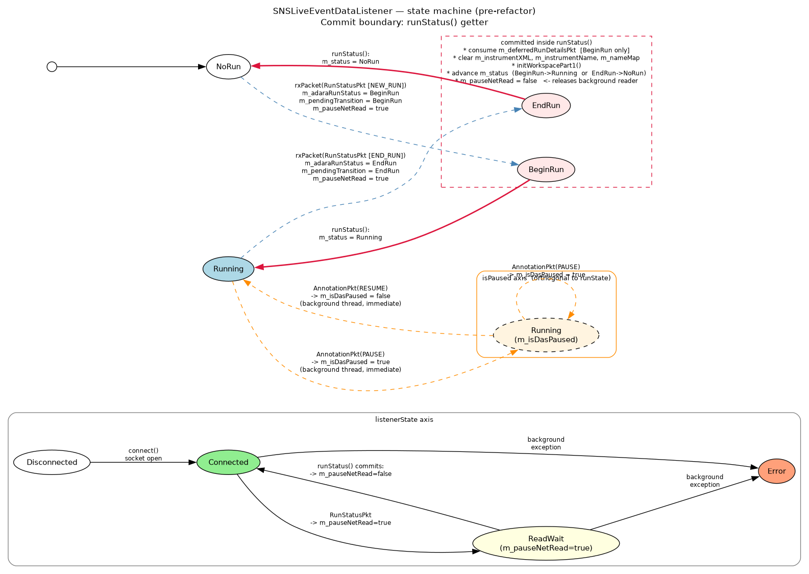

SNSLiveEventDataListener refactoring#
This document covers the listener-specific aspects of the June 2026 live-listener
refactor (the ADARA packet flow, the deferred RunStatusPkt handling,
the m_pauseNetRead back-pressure mechanism, and the state-machine
diagrams) for SNSLiveEventDataListener.
For the generic interface — the four pure-getter queries, the
extractData() template method, the migration recipe, and worked
examples for non-SNS listeners — see Live-Listener API Migration Guide (v3 refactoring).
Scope#
SNSLiveEventDataListener is the most complex concrete
ILiveListener subclass in the tree. It is the only listener
that:
maintains a real
BeginRun/EndRunedge-detection contract with its consumers;defers run-status side effects (cache clears, workspace re-init, deferred-packet consumption) across thread boundaries;
uses an explicit back-pressure flag (
m_pauseNetRead) between the background reader and the foreground extractor;has a documented pause/resume orthogonal axis driven by ADARA annotation packets.
Everything in this document applies to SNSLiveEventDataListener
specifically. Other listeners are simpler and are covered in
Live-Listener API Migration Guide (v3 refactoring).
ADARA protocol context#
The SNS live-event stream is the ADARA protocol. Five packet types are relevant to the state machine:
ADARA::RunStatusPkt— carriesNEW_RUN(run is starting) andEND_RUN(run is ending) markers. Drives therunState()axis.ADARA::AnnotationPkt— carriesPAUSEandRESUMEmarkers. Drives theisPaused()axis.ADARA::BeamlineInfoPktandADARA::GeometryPkt— carry instrument-geometry information. Allow completion of workspace initialization.ADARA::BankedEventPkt— carries the actual neutron-event records. Gated onm_isDasPausedso paused events are discarded.
Two orthogonal state axes#
The ADARA protocol exposes two independent state axes that the
legacy runStatus() conflated:
Run state — whether the DAS is in a run (
NoRun / BeginRun / Running / EndRun). Driven byRunStatusPkt. Transitions require workspace-level coordination (cache clears, re-init), so they are queued and committed inextractData().Pause state — whether the current run is paused. Driven by
AnnotationPktPAUSE/RESUMEmarkers. Orthogonal to run state: a run can be inRunningstatus while paused, and the ADARA protocol does not change theRunStatusfield on a pause. Pause state has no workspace-level side effects beyond gating event appending, so it is applied immediately in the background thread, not queued.
A summary of where each axis is read and written:
Question |
Answer |
Type |
|---|---|---|
What is the DAS run state right now? |
|
pure read ( |
Is the current run paused? |
|
pure read ( |
Is the listener connected / back-pressure / errored? |
|
pure read ( |
What run-state transition (if any) did the most recent
|
|
pure read ( |
Pre-refactor problem#
The legacy SNSLiveEventDataListener::runStatus() (roughly lines
1495–1534 in the pre-refactor SNSLiveEventDataListener.cpp)
performed all of the following inside what callers treated as a
getter:
Returned the cached
m_statusvalue.On
BeginRun: consumedm_deferredRunDetailsPktviasetRunDetails(*m_deferredRunDetailsPkt), reset the deferred packet, advancedm_statustoRunning.On
EndRun: clearedm_instrumentXML,m_instrumentName,m_dataStartTime, advancedm_statustoNoRun.Unconditionally: cleared the
m_pauseNetReadback-pressure flag, releasing the background reader.Implicitly: marked the workspace as needing re-initialisation and ran
initWorkspacePart1()to populate it.
This produced four distinct problems:
Conflated state. A single
RunStatusreturn value reported both the DAS run state and the listener’s internal FSM position.Hidden side effects. Every call to
runStatus()mutated caches and consumed packets. Reading the state without changing it was impossible.The “little white lie” path (resolved by
JoiningRun). WhenNEW_RUNarrived before the workspace was initialised,rxPacket(RunStatusPkt)skipped theBeginRuntransition and pretended the state was alreadyRunning, preserving the workspace-init invariant but at the cost of an off-diagram code path that was the onlyNoRun → Runningtransition committed outsideonBeginRun(). This is now eliminated: the listener instead advances to the newJoiningRunstate and queues a normalBeginRunedge onceinitWorkspacePart2()completes (see Single-slot invariant below).Stand-alone ``LoadLiveData`` deadlock.
LoadLiveDatadoes not callrunStatus(). AfterrxPacket(RunStatusPkt)setm_pauseNetRead = true, nothing ever cleared it. The background reader stopped, the workspace could not be re-initialised, andextractData()either timed out (NotYet) or spun on a stale workspace.
A fifth, more subtle issue: MonitorLiveData worked correctly only
because it happened to call extractData() first and
runStatus() second within each polling iteration. Nothing in
the type system enforced that ordering; it was an undocumented
contract.
New state model#
The conflated m_status member is split into three:
m_adaraRunStatus— what the DAS run state is right now (read byrunState()). Written byrxPacket(RunStatusPkt)and by theonBeginRun()/onEndRun()hooks.m_pendingTransition— exactly one run-state edge waiting to be consumed byextractData()(queued byrxPacket(RunStatusPkt), dequeued byonBeforeExtract()forBeginRunand byonAfterExtract()forEndRun).m_lastTransition— the run-state edge committed by the most recent successfulextractData()(read bylastTransition()). BothBeginRunandEndRunare observable to the caller between theextractData()that committed them and the next successfulextractData().m_previousExtractCompleted— settrueat the end ofonAfterExtract(), consumed (cleared) at the start of the nextonBeforeExtract()after bothNotYetgates pass. Gates the deferred clear ofm_lastTransitionso the edge survivesException::NotYetretries (the C1 invariant).
The pause flag is renamed for clarity: m_runPaused →
m_isDasPaused, read by isPaused().
The back-pressure flag m_pauseNetRead keeps both its name and its
meaning, to keep the diff focused and the explanatory comments in
rxPacket(RunStatusPkt) intelligible.
Single-slot invariant#
At most one un-consumed transition can exist at a time. The background
thread enforces this by setting m_pauseNetRead = true whenever it
queues a transition; the background reader then blocks until
extractData() releases m_pauseNetRead via the hook.
The JoiningRun case (NEW_RUN with workspace not yet initialised)
is the one path that queues no back-pressure: the background thread
must keep reading packets to complete workspace initialisation. It
queues a BeginRun edge only once initWorkspacePart2() succeeds,
at which point m_pendingTransition is not yet occupied and no
back-pressure is needed (there are no prior run’s events to protect).
The invariant is checked explicitly in rxPacket(RunStatusPkt);
violation is treated as an implementation error and raises:
if (m_pendingTransition) {
throw std::runtime_error(
"SNSLiveEventDataListener: pending run-state transition was not "
"consumed before a new transition arrived — back-pressure invariant "
"violation.");
}
m_pendingTransition = BeginRun; // or EndRun
m_pauseNetRead = true;
This is a runtime_error rather than a debug-only assertion so the
condition is never silently masked in release builds.
Header summary#
class SNSLiveEventDataListener : public API::LiveListener,
public Poco::Runnable,
public ADARA::Parser {
public:
// pure queries
RunStatus runState() const override;
bool isPaused() const override;
ListenerState listenerState() const override;
std::optional<RunStatus> lastTransition() const override;
int runNumber() const override { return m_runNumber.load(); }
bool isConnected() override;
protected:
/// Phase 1 of extraction: commit any queued ``BeginRun`` transition.
/// Called by LiveListener::extractData() before doExtractData().
/// Runs on the foreground thread.
void onBeforeExtract() override;
/// Phase 2/3 of extraction: wait for workspace initialisation,
/// build the new EventWorkspace, swap, and return it.
std::shared_ptr<API::Workspace> doExtractData() override;
/// Phase 4 of extraction: commit any queued ``EndRun`` transition.
/// Deferred to after doExtractData() so the finishing run's
/// accumulated events are harvested before the workspace buffer
/// is reset by onEndRun().
void onAfterExtract() override;
/// Sends all bytes in buf over m_socket, retrying short writes.
/// Virtual so test subclasses can inject short-write/failure scenarios.
virtual int sendHelloPacket(const void *buf, int size);
/// Explicit, named state-transition hooks.
virtual void onBeginRun();
virtual void onEndRun();
virtual void onRunPause(bool paused);
private:
// ADARA / DAS state (written by background thread)
RunStatus m_adaraRunStatus{NoRun};
std::shared_ptr<ADARA::RunStatusPkt> m_deferredRunDetailsPkt;
// Pending run-state transition (background -> foreground).
// INVARIANT: at most one un-consumed transition at a time.
std::optional<RunStatus> m_pendingTransition;
// Result of the most recent commit (read by lastTransition()).
std::optional<RunStatus> m_lastTransition;
// Listener health
std::shared_ptr<std::runtime_error> m_backgroundException;
// Existing members (unchanged)
std::atomic<int> m_runNumber{0};
DataObjects::EventWorkspace_sptr m_eventBuffer;
bool m_workspaceInitialized{false};
std::string m_instrumentName;
std::string m_instrumentXML;
/* ... etc. ... */
mutable std::mutex m_mutex; ///< guards all of the above
std::atomic<bool> m_isConnected{false}; ///< connection health
std::atomic<bool> m_pauseNetRead{false}; ///< back-pressure flag
std::atomic<bool> m_bgThreadCaughtUp{false}; ///< foreground snapshot gate
std::atomic<bool> m_stopThread{false}; ///< destructor shutdown signal
std::atomic<bool> m_isDasPaused{false}; ///< set by onRunPause(); read by isPaused()
std::atomic<bool> m_ignorePackets{false}; ///< see ignorePacket() / the m_ignorePackets appendix
NameMapType m_nameMap;
/* ... etc. ... */
};
Convention: any POD-typed member that a background thread and the
foreground both touch is made std::atomic even when it is already
covered by m_mutex — belt-and-suspenders rather than relying on the
lock alone. Concretely, per the header’s own grouping
(SNSLiveEventDataListener.h:242-270):
Atomic, lock-free (no mutex needed):
m_isConnected,m_pauseNetRead,m_bgThreadCaughtUp,m_stopThread,m_isDasPaused,m_runNumber.Atomic AND mutex-guarded:
m_ignorePackets— guarded by the singledoExtractData()critical section on the foreground side and by the parse lock on the background side (ignorePacket()).Mutex-guarded only:
m_backgroundException,m_eventBuffer,m_adaraRunStatus,m_pendingTransition,m_lastTransition,m_instrumentXML,m_instrumentName,m_nameMap,m_requiredLogs,m_deferredRunDetailsPkt,m_workspaceInitialized,m_previousExtractCompleted,m_dataStartTime,m_monitorLogs,m_wsName.
All rxPacket() overrides now run under m_mutex, acquired once by
run() around the whole bufferParse() iteration (see “Background
reader loop” below) — do not acquire m_mutex inside any
rxPacket() body or any function called exclusively from one;
std::mutex is non-recursive and a second acquisition would deadlock.
State-machine diagrams#
Two diagrams below show the runState evolution for the SNS
listener. Apart from the addition of a new JoiningRun state,
the shape of the state machine is unchanged between
pre- and post-refactor; what changes is where the transitions are
committed — and that change is what makes the listener safe to use
from stand-alone LoadLiveData.
In both diagrams:
Nodes are the four
runStatevalues (NoRun,BeginRun,Running,EndRun).Edges are labelled with the ADARA packet (or call) that triggers the transition.
A dashed box (cluster) encloses the transitions that are committed at a particular point in the code — i.e. where the visible state mutation and the workspace-level side effects actually occur.
The
isPaused()axis is shown as a separate small subgraph; it is orthogonal torunStateand applied immediately in the background thread.The
listenerState()axis is shown as a separate small subgraph. In the post-refactor diagram it additionally carries theConnected→Disconnectededge for a clean peer close, the getter’sError>Disconnected>ReadWait>Connectedprecedence, and a dotted edge marking that theErroroutcome is a foreground escalation, not something the background thread itself ascribes — see Disconnect is not an error — and where the error gets ascribed.
Pre-refactor: transitions committed inside runStatus()#

In the pre-refactor design the commit boundary is the
``runStatus()`` getter itself. External callers that never invoke
runStatus() — notably stand-alone LoadLiveData — never trigger
the transition, m_pauseNetRead is never released, and the
listener deadlocks.
The diagram source is committed alongside the rendered image at
dev-docs/source/images/SNSLiveEventDataListener-state-machine-before.dot;
regenerate the PNG with:
dot -Tpng -o SNSLiveEventDataListener-state-machine-before.png \
SNSLiveEventDataListener-state-machine-before.dot
Post-refactor: transitions committed inside extractData()#
![SNSLiveEventDataListener state machine, post-refactor. BeginRun→Running and EndRun→NoRun edges are enclosed in a dashed cluster labelled "committed inside extractData() (onBeforeExtract → doExtractData → onAfterExtract)", indicating that the cache clears, workspace re-init, deferred-packet consumption, and m_pauseNetRead release all happen as part of the template-method extractData() call — with BeginRun dispatched in onBeforeExtract() and EndRun deferred to onAfterExtract() so the finishing run's events are harvested first. The listenerState axis additionally shows a Connected→Disconnected edge for a clean peer close (the background thread stays neutral: no fatal(), no m_backgroundException) and a dotted Disconnected→Error edge marking that the Error outcome is ascribed by the foreground (doExtractData(), which has no recovery action available), not by the background thread.](_images/SNSLiveEventDataListener-state-machine-after.png)
In the post-refactor design the commit boundary is the
``extractData()`` template method — specifically the
onBeforeExtract() and onAfterExtract() hooks that bracket
doExtractData(). BeginRun is dispatched in
onBeforeExtract() so the new run’s workspace is initialised
before doExtractData() snapshots it; EndRun is dispatched in
onAfterExtract() so the finishing run’s accumulated events are
harvested before onEndRun() resets the buffer.
Because every consumer of ILiveListener calls extractData(),
every consumer drives the FSM forward, and stand-alone
LoadLiveData works without changes.
The diagram source is committed alongside the rendered image at
dev-docs/source/images/SNSLiveEventDataListener-state-machine-after.dot;
regenerate the PNG with the analogous dot command.
Implementation#
Pure getters#
ILiveListener::RunStatus
SNSLiveEventDataListener::runState() const {
if (m_backgroundException) throw *m_backgroundException;
std::lock_guard lock(m_mutex);
return m_adaraRunStatus;
}
ListenerState
SNSLiveEventDataListener::listenerState() const {
std::lock_guard lock(m_mutex);
if (m_backgroundException) return ListenerState::Error;
if (!m_isConnected) return ListenerState::Disconnected;
if (m_pauseNetRead) return ListenerState::ReadWait;
return ListenerState::Connected;
}
std::optional<ILiveListener::RunStatus>
SNSLiveEventDataListener::lastTransition() const {
if (m_backgroundException) throw *m_backgroundException;
std::lock_guard lock(m_mutex);
return m_lastTransition;
}
bool SNSLiveEventDataListener::isPaused() const {
std::lock_guard lock(m_mutex);
return m_isDasPaused;
}
All four getters are const and have no side effects. None mutate
m_adaraRunStatus, m_isDasPaused, m_pendingTransition,
m_pauseNetRead, or any cache.
Background reader and packet handlers#
In rxPacket(const ADARA::RunStatusPkt &pkt) the changes versus the
legacy implementation are:
Replace assignments to the conflated
m_statuswith assignments tom_adaraRunStatus.On
NEW_RUNwithm_workspaceInitialized == true: enforce the single-slot invariant, queuem_pendingTransition = BeginRun, setm_pauseNetRead = true.On
NEW_RUNwithm_workspaceInitialized == false(joining path): setm_adaraRunStatus = JoiningRun, callsetRunDetails(pkt)immediately sorun_number/run_startare available during the bootstrap window, queue no transition, set no back-pressure. The background thread must keep reading to complete workspace init. OnceinitWorkspacePart2()setsm_workspaceInitialized = trueand seesm_adaraRunStatus == JoiningRun, it queuesm_pendingTransition = BeginRun; the foreground then commits toRunningvia the normalonBeginRun()hook (joining-completion path: no cache reset, nom_deferredRunDetailsPktneeded).On
END_RUN: enforce the single-slot invariant, queuem_pendingTransition = EndRun, setm_pauseNetRead = true, copysetRunDetails(pkt)if!haveRunNumber(unchanged).m_adaraRunStatusis not mutated here — it is advanced toNoRunlater fromonEndRun()(dispatched fromonAfterExtract()afterdoExtractData()has harvested the finishing run’s events). Until that commit,runState()continues to reportRunning(orJoiningRun); theEndRunedge is delivered to consumers vialastTransition(), satisfying the “exactly once” delivery contract.
In rxPacket(const ADARA::AnnotationPkt &pkt), PAUSE and
RESUME markers call onRunPause(true/false) directly from the
background thread. This is intentional: pause state has no
workspace-level side effects (it only gates event appending in
rxPacket(BankedEventPkt)), so applying it immediately at the
packet boundary gives the most accurate event filtering relative to
the DAS timeline. The pause/resume path does not use
m_pendingTransition and does not set m_pauseNetRead.
Foreground snapshot gate (m_bgThreadCaughtUp)#
A new std::atomic<bool> m_bgThreadCaughtUp{false} field
synchronises the background parser and the foreground extractor:
Background writes: stored
falseat the start of everybufferParse()iteration; storedtrueat the end.receiveBytes()does not touch the flag — a background thread blocked in receive presents as “caught-up” because its in-memory state is stable.Foreground use in
onBeforeExtract(): ifm_thread.isRunning() && !m_bgThreadCaughtUp, the call throwsException::NotYetimmediately, without touching any shared state. This closes the inter-rxPacket()race window — without it, the foreground could snapshotm_pendingTransitionbetween tworxPacket()calls in the samebufferParse()iteration.Background use in the pause loop: the inner pause loop short-circuits on
m_bgThreadCaughtUp == falseso the foreground cannot wake the background thread (by clearingm_pauseNetRead) while a parse is still in flight.Run-boundary reset:
onEndRun()storesfalseimmediately before settingm_adaraRunStatus = NoRun. This re-arms the first-extract synchronisation for every subsequent run, exactly mirroring the construction-time initial value: the firstextractData()of each run is gated on that run’s firstbufferParse(), not just the very first run.Test-fixture note:
NoNetworkTestfixtures run with no background thread, som_thread.isRunning()short-circuits the guard for them; no fake flag manipulation is required in tests.
extractData() — the only commit point#
The body below is presented as a single extractData() for clarity.
In the actual implementation it is split across the three-phase
LiveListener::extractData() template method
(onBeforeExtract() → doExtractData() → onAfterExtract()),
with the m_backgroundException rethrow remaining the
responsibility of the individual SNS getters (runState(),
lastTransition() — see the pure-getters section above).
onBeforeExtract() handles Phase 1 (commit a pending BeginRun
edge); doExtractData() handles Phase 2/3 (workspace-init wait +
EventWorkspace build + swap); onAfterExtract() handles Phase 4
(commit a pending EndRun edge, deferred until after
doExtractData() so the finishing run’s events are harvested first).
The exception-safety guarantees described below survive the split
unchanged.
std::shared_ptr<Workspace>
SNSLiveEventDataListener::extractData() { // conceptually
// m_backgroundException is re-thrown in the individual SNS getters
// (runState(), lastTransition()), not in this template method body.
// Shown here for orientation; the base LiveListener::extractData() body
// is simply: onBeforeExtract() → doExtractData() → onAfterExtract().
// ---- Phase 1 (onBeforeExtract): commit a pending BeginRun --------
{
// Fast-path: throw NotYet immediately if the background thread is
// mid-parse (before taking any lock).
if (m_thread.isRunning() && !m_bgThreadCaughtUp.load(std::memory_order_acquire))
throw Exception::NotYet("Background thread parse is in flight.");
std::optional<RunStatus> pending;
{
std::lock_guard lock(m_mutex);
// Re-check under the lock to close the TOCTOU window.
if (m_thread.isRunning() && !m_bgThreadCaughtUp.load(std::memory_order_acquire))
throw Exception::NotYet("Background thread parse is in flight.");
// Both NotYet gates passed: the prior extract's edge has been
// delivered. Clear it now so the next tick sees nullopt.
// m_previousExtractCompleted is false during a NotYet retry, so
// the edge survives retries (C1 invariant).
if (m_previousExtractCompleted) {
m_lastTransition.reset();
m_previousExtractCompleted = false;
}
pending = m_pendingTransition;
}
if (pending && *pending == BeginRun) {
{
std::lock_guard lock(m_mutex);
m_pendingTransition.reset();
}
onBeginRun();
{
std::lock_guard lock(m_mutex);
m_lastTransition = BeginRun; // memoise for lastTransition()
}
m_pauseNetRead = false;
}
}
// ---- Phase 2: wait for workspace initialisation (unchanged) -----
static const double maxBlockTime = 10.0;
const DateAndTime endTime = DateAndTime::getCurrentTime() + maxBlockTime;
while (!m_workspaceInitialized && DateAndTime::getCurrentTime() < endTime) {
Poco::Thread::sleep(100);
}
if (!m_workspaceInitialized) {
throw Exception::NotYet("The workspace has not yet been initialized.");
}
if (m_ignorePackets) {
throw Exception::NotYet("Waiting for a run to start.");
}
// ---- Phase 3: build the new EventWorkspace and swap (unchanged) -
EventWorkspace_sptr temp = std::dynamic_pointer_cast<EventWorkspace>(
API::WorkspaceFactory::Instance().create(
"EventWorkspace", m_eventBuffer->getNumberHistograms(), 2, 1));
API::WorkspaceFactory::Instance().initializeFromParent(*m_eventBuffer, *temp, false);
temp->mutableRun().clearOutdatedTimeSeriesLogValues();
for (auto &monitorLog : m_monitorLogs)
temp->mutableRun().removeProperty(monitorLog);
m_monitorLogs.clear();
auto monitorBuffer = m_eventBuffer->monitorWorkspace();
if (monitorBuffer) {
auto newMonitorBuffer = WorkspaceFactory::Instance().create(
"EventWorkspace", monitorBuffer->getNumberHistograms(), 1, 1);
WorkspaceFactory::Instance().initializeFromParent(
*monitorBuffer, *newMonitorBuffer, false);
temp->setMonitorWorkspace(newMonitorBuffer);
}
{
std::lock_guard lock(m_mutex);
std::swap(m_eventBuffer, temp);
}
// ---- Phase 4 (onAfterExtract): commit a pending EndRun ----------
// Deferred so the snapshot above contains the finishing run's
// accumulated events before onEndRun() resets the buffer.
{
std::optional<RunStatus> pending;
{
std::lock_guard lock(m_mutex);
pending = m_pendingTransition;
// m_lastTransition is NOT cleared here; it is cleared at the
// start of the next onBeforeExtract() after both NotYet gates
// pass, guarded by m_previousExtractCompleted.
}
if (pending && *pending == EndRun) {
{
std::lock_guard lock(m_mutex);
m_pendingTransition.reset();
m_lastTransition = EndRun; // memoise for lastTransition()
}
onEndRun();
m_pauseNetRead = false;
}
}
{
std::lock_guard lock(m_mutex);
m_previousExtractCompleted = true; // allow next onBeforeExtract to clear
}
return temp;
}
Critical detail (C1)#
m_lastTransition is cleared at the start of the next
onBeforeExtract(), after both NotYet gates pass, guarded by
m_previousExtractCompleted. The flag is set to true only at
the end of onAfterExtract() — which runs only when
doExtractData() returns normally. A NotYet thrown from Phase
1 (before either gate returns) or Phase 2/3 therefore leaves
m_previousExtractCompleted == false, so the retry’s
onBeforeExtract() preserves the edge intact. This is the C1
invariant.
Important properties:
Each phase runs once per call. The pending transition is dequeued atomically in whichever phase claims it (Phase 1 for
BeginRun, Phase 4 forEndRun); nom_transitionHandledflag is needed.``BeginRun`` and ``EndRun`` are symmetric. Both are observable to the caller via
lastTransition()between theextractData()that committed them and the next successfulextractData(). This matters forMonitorLiveData, which readslastTransition()afterextractData()returns and uses aBeginRunedge to drive the_postworkspace-rename path.The transition phases hold the mutex only while reading the queue, not while running the transition hook. Hooks may safely take the mutex themselves.
Exception-safe.
m_previousExtractCompletedflips totrueonly at the end ofonAfterExtract(), which runs only afterdoExtractData()returns normally. AnyException::NotYetthrown from Phase 1 (before either gate) or Phase 2/3 structurally leaves the flagfalse, so the deferred clear is skipped on the retry — the C1 invariant is a consequence of the template-method contract and the flag’s placement, not an extra branch. A pendingEndRunis not consumed until Phase 4 completes, so a Phase 2/3 failure leaves it queued for the nextextractData().
Transition hooks#
void SNSLiveEventDataListener::onBeginRun() {
std::lock_guard lock(m_mutex);
m_workspaceInitialized = false;
// Cache clears: exactly the set the legacy runStatus() clears.
m_instrumentXML.clear();
m_instrumentName.clear();
// Note: m_dataStartTime NOT cleared on BeginRun — matches legacy.
m_nameMap.clear();
initWorkspacePart1();
if (!m_deferredRunDetailsPkt) {
// Invariant: rxPacket(NEW_RUN) must have stashed the RunStatusPkt
// before queueing BeginRun. Reaching here means a producer queued
// a BeginRun transition without populating m_deferredRunDetailsPkt,
// which is an implementation error in the listener itself.
throw std::runtime_error(
"SNSLiveEventDataListener::onBeginRun(): "
"m_deferredRunDetailsPkt is null — invariant violation.");
}
setRunDetails(*m_deferredRunDetailsPkt);
m_deferredRunDetailsPkt.reset();
m_adaraRunStatus = Running; // we've crossed the edge
// m_pauseNetRead released by the caller (onBeforeExtract) after
// this hook returns — not here.
}
void SNSLiveEventDataListener::onEndRun() {
std::lock_guard lock(m_mutex);
m_workspaceInitialized = false;
m_instrumentXML.clear();
m_instrumentName.clear();
m_dataStartTime = Types::Core::DateAndTime(); // cleared only on EndRun
m_nameMap.clear();
initWorkspacePart1();
m_adaraRunStatus = NoRun;
// m_pauseNetRead released by the caller (onAfterExtract) after
// this hook returns — not here.
}
void SNSLiveEventDataListener::onRunPause(bool paused) {
// Called from rxPacket(AnnotationPkt) which already holds m_mutex;
// the hook does not re-lock.
//
// NOT dispatched through the pending-transition queue.
// Pause state is orthogonal to run state: m_adaraRunStatus remains
// Running while the run is paused. m_isDasPaused is read by
// isPaused() and by rxPacket(BankedEventPkt) to gate event
// appending. Applying this immediately gives accurate event counts:
// events received after the PAUSE annotation but before the next
// extractData() call are correctly discarded.
m_isDasPaused = paused;
}
Notes:
The cache-clear side effects inside
onBeginRun()/onEndRun()(m_instrumentXML,m_instrumentName,m_nameMap,initWorkspacePart1(), etc.) are identical to what the legacyrunStatus()did. Them_pauseNetReadrelease has moved out of these hooks into their callers (onBeforeExtract()/onAfterExtract()), so the back-pressure flag is owned by the same scope that decided to dispatch the hook.onBeginRun()andonEndRun()areprotected virtualand dispatched only fromonBeforeExtract()andonAfterExtract()respectively. Tests can subclass the listener and override the hooks to assert they fired with the expected preconditions.onRunPause()isprotected virtualand called only fromrxPacket(AnnotationPkt)in the background thread, which already holdsm_mutex. The hook therefore does not take the mutex itself. Its dispatch point differs fromonBeginRun()/onEndRun()by design.The existing
m_runPausedcheck inrxPacket(BankedEventPkt)is updated to referencem_isDasPaused; no other change to that function.
Background reader loop#
The loop below is current as of the poll-loop refactor described in Poll-driven reader loop and disconnect detection further down this document; that section covers why it looks like this, this one just walks the shape of the code.
The pause condition is short-circuited on m_bgThreadCaughtUp.
When the flag is false (i.e. a bufferParse() iteration is in
flight), the background thread never honours m_pauseNetRead — this
prevents the foreground from releasing back-pressure while
rxPacket() callbacks may still be mutating shared state.
The m_bgThreadCaughtUp flag is stored false immediately before
bufferParse() and true immediately after, framing the only
window during which onBeforeExtract() must throw NotYet.
receiveBytes() does not touch the flag; a background thread
blocked in receive (or parked in the pause gate, or blocked in
poll()) presents as caught-up.
Reading is now driven by a Poco::Net::PollSet with a 100 ms
timeout instead of a blocking receiveBytes() with a 30 s socket
timeout. A bg-thread-local needParse flag (plain bool — only
this thread touches it) records when bufferParse() has real work to
do: fresh bytes were just appended, the parse buffer is full and must
be drained to make room for more, or a prior parse was interrupted
mid-buffer by a run-transition callback and bytes remain stranded in
the parser’s internal buffer where poll() cannot observe them (the
last case reuses the needParse = true set when bufferParse()
returns a negative count). When needParse is already set, the loop
skips poll() entirely and goes straight to parsing.
void SNSLiveEventDataListener::run() {
auto setFatalState = [this](std::shared_ptr<std::runtime_error> ex) {
std::lock_guard<std::mutex> lock(m_mutex);
m_isConnected.store(false);
if (!m_backgroundException)
m_backgroundException = std::move(ex);
};
auto fatal = [&setFatalState](const std::string &msg) {
g_log.fatal() << msg << '\n';
setFatalState(std::make_shared<std::runtime_error>(msg));
throw std::runtime_error(msg);
};
// ... unchanged setup (hello packet via sendHelloPacket(), etc.) ...
Poco::Net::PollSet pollSet;
pollSet.add(m_socket, Poco::Net::PollSet::POLL_READ);
bool needParse = false;
while (!m_stopThread.load(std::memory_order_acquire)) {
// Only honour m_pauseNetRead when no parse is in flight.
while (m_bgThreadCaughtUp.load(std::memory_order_acquire) &&
m_pauseNetRead.load(std::memory_order_acquire) &&
!m_stopThread.load(std::memory_order_acquire)) {
Poco::Thread::sleep(100);
}
if (m_stopThread.load(std::memory_order_acquire)) break;
if (!needParse) {
auto ready = pollSet.poll(Poco::Timespan(0, 100000)); // 100 ms
if (!ready.empty()) {
auto it = ready.find(m_socket);
if (it != ready.end()) {
const int mode = it->second;
bool successfulRead = false;
if (mode & Poco::Net::PollSet::POLL_READ) {
unsigned int bufFillLen = bufferFillLength();
if (bufFillLen) {
int bytesRead = -1;
try {
bytesRead = m_socket.receiveBytes(bufferFillAddress(), bufFillLen);
} catch (Poco::TimeoutException &) {
bytesRead = -1; // spurious wakeup; try again next iteration
} catch (Poco::Net::NetException &e) {
fatal(std::string("network read failed: ") + e.name());
}
if (bytesRead == 0) {
// Clean peer close. NOT an error: no fatal(), no
// m_backgroundException. See "disconnect is not
// an error" below for why this is deliberate.
m_isConnected.store(false);
m_bgThreadCaughtUp.store(true, std::memory_order_release);
return;
}
if (bytesRead > 0) {
bufferBytesAppended(bytesRead);
needParse = true;
successfulRead = true;
}
} else {
// Parse buffer full; drain before reading more.
needParse = true;
successfulRead = true;
}
}
if ((mode & Poco::Net::PollSet::POLL_ERROR) && !successfulRead) {
fatal("socket poll reported error.");
}
}
}
// Poll timeout: needParse stays false, loop right back to poll().
}
if (needParse) {
needParse = false;
m_bgThreadCaughtUp.store(false, std::memory_order_release);
int packetsParsed;
{
// Hold m_mutex for the whole parse iteration: every rxPacket()
// override now runs under the lock (see below).
std::lock_guard<std::mutex> lock(m_mutex);
std::string bufferParseLog;
packetsParsed = bufferParse(bufferParseLog);
}
m_bgThreadCaughtUp.store(true, std::memory_order_release);
if (packetsParsed < 0) {
// Interrupted mid-buffer by a run-transition callback; bytes
// remain stranded where poll() cannot see them.
needParse = true;
}
}
}
// ... unchanged exception capture into m_backgroundException via the
// catch cascade, each arm calling setFatalState() ...
}
The m_pauseNetRead back-pressure is released by
onBeforeExtract() (for BeginRun) and onAfterExtract()
(for EndRun) inside extractData(), so stand-alone
LoadLiveData no longer deadlocks.
Note that onEndRun() also participates in the flag’s lifecycle: it
stores false to re-arm the per-run first-extract gate (see the
“Foreground snapshot gate” section above). The background loop itself
only writes the flag around bufferParse(); onEndRun() is the
only other writer.
Holding m_mutex for the entire parse iteration (rather than letting
each rxPacket() override take it individually, as the pre-refactor
code did) makes “the caller holds m_mutex” an invariant for every
rxPacket() body and its callees (initWorkspacePart2(),
appendEvent(), etc.), fixing Coverity CIDs 1663860 and 1663859
(accesses to m_adaraRunStatus / m_pendingTransition without the
lock in initWorkspacePart2()’s tail). The corollary: m_mutex
is non-recursive, so no rxPacket() body or anything called
exclusively from one may acquire m_mutex itself — setFatalState()
/ fatal() are safe because they are only reachable from run()’s
top-level catch arms and pre-parse code, never from inside
bufferParse().
Poll-driven reader loop and disconnect detection#
This section covers the follow-on refactor layered on top of everything above: the socket read loop became event-driven, and an orderly server disconnect — previously invisible — is now detected and reported.
Pre-existing problems#
Orderly server disconnect was completely undetected. When the SMS server called
close(),receiveBytes()returned0. That return value was never checked; the background thread spun indefinitely,m_isConnectedstayedtrue, andlistenerState()kept reportingConnected— the listener gave no indication that the server was gone.The read loop was timeout-driven, not event-driven.
run()blocked insidereceiveBytes()and relied on a 30 s socket receive timeout as its only way to regain control. This made shutdown slow (up to ~60 s) and error detection sluggish, and it calledbufferParse()unconditionally on every iteration even when there was nothing new to parse.Termination paths were inconsistent. Thrown network exceptions became fatal background-thread failures; a partial hello-send exited the thread with no error state set at all; and orderly disconnect wasn’t detected in the first place.
The poll loop#
Poco::Net::PollSet now waits for socket readiness with a ~100 ms
timeout, replacing the old 30 s blocking receive. receiveBytes() is
only called when the socket is readable and the parser buffer has free
space (bufferFillLength() != 0); when the buffer is full, the loop
sets its needParse flag instead so the parser drains it before more
bytes are read. RECV_TIMEOUT itself is reduced from 30 s to 1 s and
demoted to a pure backstop — actual readiness is driven by poll(),
not by the socket’s own receive timeout.
bufferParse() runs exactly when there is work: fresh bytes were just
appended, the parse buffer is full and must be drained to make room, or a
prior parse was interrupted mid-buffer by a run-transition callback
(rxPacket(RunStatusPkt) returning to request a pause) and bytes
remain stranded in the parser’s internal buffer, a place poll()
cannot see.
When a poll event fires, POLL_READ is drained before POLL_ERROR
is honoured. On Linux, a peer close with pending bytes can deliver
EPOLLIN|EPOLLHUP together; draining the bytes first means the
final END_RUN packet isn’t discarded. On macOS kqueue, EV_ERROR
(a kevent changelist failure) can co-occur with EVFILT_READ (valid
pending data) right after a back-pressure pause; the loop’s
successfulRead flag suppresses the POLL_ERROR fatal in that case
so a transient kqueue artefact doesn’t kill a perfectly healthy
connection.
Disconnect is not an error — and where the error gets ascribed#
An orderly server close is not intrinsically an error — it’s something a correctly-implemented SMS server does routinely. The refactor keeps that distinction visible by splitting the handling across two layers.
The background thread stays neutral. A clean peer close
(receiveBytes() == 0) does not go through fatal(). It stores
m_isConnected = false, stores m_bgThreadCaughtUp = true (so
onBeforeExtract() isn’t wedged behind its NotYet gate), and
returns. No m_backgroundException is written, so
listenerState() reports Disconnected, not Error. This is a
deliberate reservation: a future implementation could respond to a
disconnect by reconnecting and rescanning the ADARA stream, and nothing
about the background thread’s handling forecloses that — the condition
was never declared fatal in the first place.
The foreground ascribes the error. The current implementation has
no recovery action available, so the escalation happens one layer up:
doExtractData() throws once there is nothing left to deliver (see
below), and that is what a consumer actually observes as failure. The
net effect today is Connected → Error, but the Error is a
foreground ascription made at the extractData() boundary —
listenerState() itself never returns Error by way of a clean
disconnect; it stays at Disconnected.
This is different from every abnormal termination. POLL_ERROR, an
unexpected Poco::Net::NetException, an exhausted hello-send retry,
and any rxPacket() throw all route through the same fatal()
helper, which genuinely does report Error:
auto setFatalState = [this](std::shared_ptr<std::runtime_error> ex) {
std::lock_guard<std::mutex> lock(m_mutex);
m_isConnected.store(false);
if (!m_backgroundException) // first-writer-wins
m_backgroundException = std::move(ex);
};
auto fatal = [&setFatalState](const std::string &msg) {
g_log.fatal() << msg << '\n';
setFatalState(std::make_shared<std::runtime_error>(msg));
throw std::runtime_error(msg);
};
listenerState() reads these two flags with a fixed precedence —
Error beats Disconnected beats ReadWait beats Connected:
API::ListenerState SNSLiveEventDataListener::listenerState() const {
std::lock_guard<std::mutex> scopedLock(m_mutex);
if (m_backgroundException) return API::ListenerState::Error;
if (!m_isConnected.load()) return API::ListenerState::Disconnected;
if (m_pauseNetRead.load()) return API::ListenerState::ReadWait;
return API::ListenerState::Connected;
}
m_backgroundException is first-writer-wins so the precise message
from fatal() (or from rxPacket()) is never clobbered by a more
generic message from an outer catch arm. This precedence and the
first-writer-wins guard are pinned by
test_listenerState_Error_preempts_Disconnected,
test_listenerState_Error_preempts_ReadWait, and
test_backgroundException_is_first_writer_wins in
SNSLiveEventDataListenerNoNetworkTest.h.
Surfacing the disconnect to consumers#
doExtractData() performs two disconnect checks, both guarding against
a consumer spinning forever on a dead stream:
Check 1 (pre-init). If the workspace was never initialised and
m_isConnectedis alreadyfalse, the wait loop breaks immediately instead of waiting out the full 10 sstartupTimeout, and throws with the message"stream ended before workspace initialization".Check 2 (post-init). Once the workspace exists,
doExtractData()only throws"stream ended after server disconnect"when there is genuinely nothing left to deliver: no detector events, no monitor events (monitor events live in a separateEventWorkspacereachable viam_eventBuffer->monitorWorkspace(), so checking detector events alone would silently discard a final monitor-only batch), and no pending run-state transition. A finalEndRunedge or a final monitor-only batch is still delivered to the caller before the stream-ended error is raised on the next call.
Back-pressure defers disconnect detection (known limitation)#
While m_pauseNetRead is set (ReadWait), the background thread is
parked in the pause-gate loop above the poll block and never calls
poll() — so it never observes a peer’s FIN while paused. The flag is
cleared only by onBeforeExtract() and onAfterExtract(), both
foreground. Consequently a peer close that arrives during ReadWait
is invisible until the next extractData() call releases the flag;
the state path actually taken is the two-hop ReadWait → Connected
(on release) → Disconnected (on the next poll iteration), never a
direct ReadWait → Disconnected.
The consequence worth stating plainly: if a consumer stops calling
extractData() while a transition is pending, a server that has
already gone away is never detected — the background thread just sleeps
in 100 ms increments forever. In practice this is bounded only by
MonitorLiveData’s own polling loop continuing to call
extractData(); nothing in the listener itself bounds it.
This is future work, out of scope for this PR: the pause-gate sleep
could be bounded and paired with a zero-timeout poll() for EOF while
parked, so a disconnect during back-pressure is noticed promptly instead
of only on the next release. It’s also why
test_serverDisconnect_during_ReadWait_setsDisconnected exercises the
joining path (which sets no back-pressure at all) rather than a true
ReadWait scenario — there is currently no code path that reaches
Disconnected directly from ReadWait.
Shutdown path#
The destructor sets m_stopThread and then calls
m_socket.shutdown() to unblock the background thread immediately
rather than waiting out its bounded internal timeouts. shutdown() is
safe to call concurrently with an in-flight receiveBytes() /
poll() on the same socket — it only issues shutdown(fd,
SHUT_RDWR) on the shared descriptor and doesn’t touch Poco’s
reference-counted SocketImpl, unlike close(), which would race on
that refcount. A shut-down socket becomes read-ready with EOF, so
poll() wakes and receiveBytes() returns 0 — the destructor
reuses the same clean-peer-close path described above. The destructor
then waits on a bounded tryJoin(), retrying a handful of times before
a logged std::abort() as a fail-loud backstop against a wedged
thread. Net effect: shutdown latency drops from up to ~60 s to
sub-second.
Non-goals#
No reconnect or retry logic. Briefly considered, but deemed too difficult to implement at present due to the associated requirement to rescan the ADARA stream — see Disconnect is not an error — and where the error gets ascribed above for why the door is nonetheless left open for this in the background thread’s handling.
No
SocketReactorconversion.No redesign of run-transition handling.
No changes to packet parsing behavior or to the back-pressure invariant.
Behaviour preservation (SNS-specific)#
Behaviour |
Pre-refactor |
Post-refactor |
|---|---|---|
|
yes, via mutation |
yes, via |
|
yes |
yes |
Workspace re-initialised at run boundaries |
inside |
inside |
|
yes |
yes |
|
yes |
yes |
|
yes |
yes, inside |
|
inside |
inside |
|
yes (as “little white lie” direct |
yes — replaced by honest |
|
yes, inline |
yes, routed through |
Paused events discarded at the correct packet boundary |
yes |
yes — |
|
no |
yes ( |
|
yes |
yes ( |
Stand-alone |
no (deadlocks) |
yes (commit happens inside |
Listener can be queried for its state without mutating it |
no |
yes (all queries |
Orderly server disconnect detected |
no (background thread spun forever, |
yes — background thread reports |
There is one behaviour that is intentionally not preserved, and it is
the bug the refactor exists to fix: stand-alone LoadLiveData
previously deadlocked after a run boundary; it now succeeds.
Appendix — pre-existing defect: m_ignorePackets is never set true#
This is a pre-existing defect in the upstream
SNSLiveEventDataListener, discovered while writing the new
integration-test suite. It is not introduced by the v3 refactor;
it predates the refactor by many years. It is documented here so that
maintainers do not waste time hunting it during code review of the
refactor PR.
Summary#
SNSLiveEventDataListener::m_ignorePackets is declared with an
in-class initialiser of false and is never assigned ``true``
anywhere in the codebase. As a consequence:
The “filter packets until run start” path (
m_filterUntilRunStart) is unreachable.The “filter packets until absolute start time” path is unreachable.
The variable-value packet cache (
m_variableMap) is populated by therxPacket(VariableU32Pkt&)/VariableDoublePkt/VariableStringPktoverloads but is never replayed, becausereplayVariableCache()is only called from inside theif (!m_ignorePackets) { ... }block ofignorePacket(), which is itself reached only whenm_ignorePacketsistrue.The
extractData()guardif (m_ignorePackets) throw Exception::NotYet("Waiting for a run to start.");can never throw.
In short: a chunk of SNSLiveEventDataListener that exists
specifically to support StartLiveData’s “from start of run” and
“from absolute time” modes is dead code as currently written.
Evidence#
The only writes to m_ignorePackets are clears inside
ignorePacket() — there is no m_ignorePackets = true; anywhere
in the tree. start() parses the requested startTime to decide
which filter mode to use, but only sets m_filterUntilRunStart,
never m_ignorePackets:
void SNSLiveEventDataListener::start(const Types::Core::DateAndTime startTime) {
m_startTime = startTime;
if (m_startTime.totalNanoseconds() == 1000000000) {
// "from start of previous run" sentinel
m_filterUntilRunStart = true;
// m_ignorePackets = true; // <-- MISSING
}
// else if (m_startTime != DateAndTime()) {
// m_ignorePackets = true; // <-- MISSING (time-based filter)
// }
m_thread.start(*this);
}
The else branch in ignorePacket() whose comment reads
“Filter based solely on time” is, today, unreachable without the
missing assignment in start().
Provenance#
This was checked against multiple points in the upstream history. The defect is present in:
mantidproject/mantid@ currentmain,mantidproject/mantid@a86c1e02(~2018).
The defect is therefore pre-existing in upstream and predates any of the work on the current refactor.
Impact#
StartLiveData“Now” mode (noStartTime, no historical replay) is unaffected — that path was never supposed to setm_ignorePackets.StartLiveData“from start of run” mode: historical packets sent by SMS that precede the most recentNEW_RUNare not filtered out. The user sees whatever SMS happens to send.StartLiveDatawith a non-defaultStartTime: packets older thanm_startTimeare not filtered out.Variable-value packets that arrive during what should be the filtered prefix are not deferred-and-replayed; they are processed immediately, in arrival order, with no end-of-filter coalescing.
Why it has gone unnoticed: the only existing unit-test suite
(SNSLiveEventDataListenerNoNetworkTest.h) does not exercise the
filter paths, and the disabled legacy integration suite was
network-dependent and unregistered. The behavioural difference is
subtle: extra historical events at the front of the stream rather than
a hard failure.
Recommended fix (separate PR)#
In SNSLiveEventDataListener::start():
void SNSLiveEventDataListener::start(const Types::Core::DateAndTime startTime) {
m_startTime = startTime;
if (m_startTime.totalNanoseconds() == 1000000000) {
// "From start of previous run" sentinel: replay everything,
// then filter out all packets older than the next NEW_RUN.
m_filterUntilRunStart = true;
m_ignorePackets = true;
} else if (m_startTime != Types::Core::DateAndTime()) {
// Absolute-time filter: drop everything older than m_startTime.
m_ignorePackets = true;
}
// else: "Now" mode — no historical filtering, m_ignorePackets
// stays false (the default).
m_thread.start(*this);
}
The fix must be accompanied by:
A targeted no-network unit test for
start()itself, asserting that the correct combination ofm_ignorePackets/m_filterUntilRunStartis produced for each of the threestartTimeinputs (sentinel, absolute past time, default-constructed “now”).Re-enabling any integration tests that were
TS_SKIP-guarded pending this fix.A conversation with the SNS team confirming the intended semantics — in particular, when the sentinel
1e9 nsvalue is used, is the intent really to ignore all packets until aNEW_RUN, or is the intent to ignore everything older than the previous run’sNEW_RUN? The dead code implies the former; the comment instart()implies the latter.
New integration-tests that depend on the filter paths working should
guard those tests with TS_WARN("XFAIL:..."), citing this defect.
Testing#
Unit tests — SNSLiveEventDataListenerNoNetworkTest.h#
These tests exercise the state machine and hooks with no background
thread and no network connection. All live in
Framework/LiveData/test/SNSLiveEventDataListenerNoNetworkTest.h.
test_field_rename_does_not_break_pause_handlingtest_onBeginRun_throws_when_deferred_run_details_missingtest_onRunPause_is_callable_and_togglestest_runState_pure_getter_does_not_mutatetest_listenerState_initially_disconnectedtest_lastTransition_initially_nulltest_isPaused_initially_falsetest_isPaused_orthogonal_to_runStatetest_onBeforeExtract_dispatches_BeginRun_to_hooktest_onAfterExtract_dispatches_EndRun_to_hooktest_no_transition_no_hooktest_lastTransition_survives_NotYet_retrytest_lastTransition_cleared_after_successful_extracttest_lastTransition_reports_EndRun_then_null_after_successtest_background_exception_propagates_from_all_getterstest_rxRunStatusPkt_newRun_throws_when_slot_occupiedtest_rxRunStatusPkt_newRun_joiningCase_throwsOnConsecutivetest_rxRunStatusPkt_newRun_joiningCase_setsJoiningRun_without_pausetest_rxRunStatusPkt_endRun_throws_when_slot_occupiedtest_rxRunStatusPkt_endRun_joiningRunCollapse_setsEndRuntest_onBeginRun_joiningPath_preserves_instrument_datatest_lastTransition_BeginRun_observable_after_successful_extracttest_requiredLogs_cleared_on_run_boundariestest_listenerState_Error_preempts_Disconnected— pins thatm_backgroundExceptionset together with!m_isConnectedreportsError, notDisconnected(see Disconnect is not an error — and where the error gets ascribed)test_listenerState_Error_preempts_ReadWait— same precedence check againstm_pauseNetReadtest_backgroundException_is_first_writer_wins— a secondsetFatalState()write must not clobber the first, more precise, message
Integration tests — SNSLiveEventDataListenerTest.h#
These tests spin up an in-process mock SMS server (Unix-domain
socket) and drive the full packet-parse path including the background
reader thread. All live in
Framework/LiveData/test/SNSLiveEventDataListenerTest.h.
Key tests include (the file is the authoritative list):
test_connect_succeeds_over_udstest_singleRun_extractsEventsAndRunNumbertest_fullRun_beginExtractEndExtracttest_runNumber_proposalId_title_propagatetest_lastTransition_preservedAcrossNotYettest_notYet_whenGeometryDelayedtest_consecutiveNewRun_surfacesRuntimeErrortest_newRunEndRun_backPressureProducesReadWaitThenCleanEndRuntest_pauseResume_orthogonalToRunStatetest_pausedEvents_droppedByDefaulttest_pausedEvents_keptWhenConfiguredtest_filterUntilRunStart_dropsPreRunPacketstest_variableCache_replayedAfterStartConditiontest_bgThreadCaughtUp_throwsNotYet_whenBgThreadStillReceivingtest_bgThreadCaughtUp_proceeds_afterCaughtUptest_bgThreadCaughtUp_resetsAtEndRun_andGatesNextRunFirstExtract
Disconnect / poll-loop coverage added for the refactor described in
Poll-driven reader loop and disconnect detection — MockSMSServer gained
Testing::PktDisconnect{} plus short-write and partial-read script
entries to drive these:
test_serverDisconnect_setsDisconnectedState— replaces the previously-XFAIL’dtest_serverDisconnect_setsErrorState; a clean peer close now reachesDisconnected, notErrortest_serverDisconnect_before_initialization_throws_quicklytest_serverDisconnect_preinit_extractData_throws_streamEndedtest_serverDisconnect_postinit_extractData_throws_streamEndedtest_serverDisconnect_monitorOnlyFinalBatch_isDeliveredtest_serverDisconnect_midRun_eventBufferDelivered_thenStreamEndedtest_serverDisconnect_endRunDelivered_thenStreamEndedtest_serverDisconnect_during_ReadWait_setsDisconnected— see the back-pressure caveat under Poll-driven reader loop and disconnect detection: this exercises the joining path (no back-pressure set), not a trueReadWait→Disconnectedtransition, because no such direct transition existstest_partialHelloSend_setsErrortest_partialHelloSend_retriesAndSucceedstest_rxPacketThrow_setsErrorState_and_extractRethrowstest_pollLoop_continues_to_parse_when_buffer_fulltest_pollRead_andError_together_drainsFirsttest_partialRead_streamReassembledtest_shutdownLatency_after_normal_connect(plus additional coverage of monitors, bad pixels, etc.)
Integration tests — SNSLiveEventDataListenerAlgorithmIntegrationTest.h#
These tests exercise the full LoadLiveData / MonitorLiveData
algorithm stack on top of the listener. Both live in
Framework/LiveData/test/SNSLiveEventDataListenerAlgorithmIntegrationTest.h.
test_LoadLiveData_standalone_no_deadlock— drives aBeginRunboundary through the completeLoadLiveDataalgorithm; asserts the algorithm completes without deadlocking and produces a workspace. This is the regression test for the bug that motivated v3.test_MonitorLiveData_workspace_renaming_unchanged— drives aNoRun → BeginRun → Running → EndRun → NoRunsequence; asserts the output workspace is renamed with the correct suffix at each boundary using the unmodifiedMonitorLiveData, proving backward compatibility.
Legacy tests — SNSLiveEventDataListenerLegacyTest.h#
The only pre-existing tests for the SNSLiveEventDataListener were in
the original network-dependent test suite (testProperties,
testStart, testExtractData, testThreadSafety) that
required a live SEQUOIA instrument connection. Previously these tests
were not registered in CMakeLists.txt, and therefore did not run in CI.
After this refactor, this file is retained as a historical reference only;
the integration and unit test files above supersede it.
Further reading#
Live-Listener API Migration Guide (v3 refactoring) — the generic migration guide and per-listener worked examples.
Framework/LiveData/inc/MantidLiveData/SNSLiveEventDataListener.hFramework/LiveData/src/SNSLiveEventDataListener.cppFramework/API/inc/MantidAPI/LiveListener.h—extractData()template method.Framework/API/inc/MantidAPI/ILiveListener.h— base-class interface.